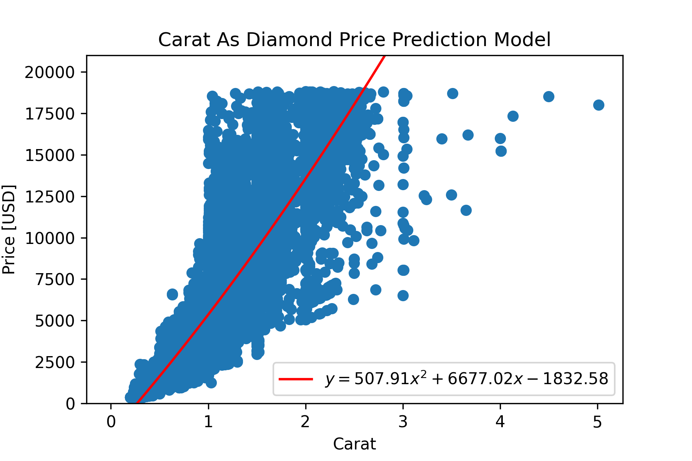

Scientists and engineers deal with data every day in their work. Whether it be test results from an experiment or data collected in the field, they are required to process data and present their analysis in a concise, clean format. This guide seeks to provide information on best practices for handling data in a lab or experiment all the way from data collection to the final report. To help demonstrate these techniques, some sample data will be provided and worked on at each step.
This article will use Python, a programming language created by Guido van Rossum. To get the most out of the article, it is recommended to follow along using a live version of Python. Python is a freely available programming language that can be obtained on all operating systems. Below is a list of resources to create a working install of Python on your respective operating system:
One of the most important steps in an experiment is collecting data in a format that allows the experimenter to easily access and perform analysis on the data. In the days before computer tools for data processing, this took the form of pen and paper. While this style of data acquisition is simple and requires no technical knowledge whatsoever, it is unsuited for data sets of any appreciable size. There is a reason that writing sentences over and over in school was a punishment!
With the advent of computers, gone are the days of needing to prep tables of data on paper. A CSV file, or comma separated value file, is a comma-delimited text document that is extensible across numerous programs. Spreadsheet programs such as Microsoft Excel, Google Sheets, LibreOffice Calc, and Apple Numbers are able to operate on these files while also being able to be edited from a text editor like Notepad or Vim.
Let’s say that you’re an manufacturing engineer at a large diamond company, and you want to review diamond sales information your company has to obtain some insight into your product and perform cost analysis on the plant. To show how to process data, we’ll be using the ‘Diamonds’ dataset from Kaggle. This dataset contains approximately 50,000 separate diamond entries with info including their price, carat, cut quality, and physical dimensions.
Boxplot
Regression 